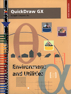

Legacy Document
Important: The information in this document is obsolete and should not be used for new development.
Important: The information in this document is obsolete and should not be used for new development.


QuickDraw GX
Environment and UtilitiesInside Macintosh: QuickDraw GX Environment and Utilities is your reference to the essential supporting components of QuickDraw GX, the new object-based graphics programming environment. This book describes important features of the QuickDraw GX programming environment, as well as several utilities that your application can use for programming with or apart from QuickDraw GX.
Before reading this book, you should be familiar with the general concepts of QuickDraw GX, as described in Inside Macintosh: QuickDraw GX Objects. That book describes the fundamental object architecture of QuickDraw GX, and introduces the shape as the basic building block of QuickDraw GX images.
Inside Macintosh: QuickDraw GX Environment and Utilities describes
For information on graphic shapes, see Inside Macintosh: QuickDraw GX Graphics. For information on text-based shapes, see Inside Macintosh: QuickDraw GX Typography. For information on printing with QuickDraw GX, see Inside Macintosh: QuickDraw GX Printing. For information on creating printing extensions and printer drivers for QuickDraw GX, see Inside Macintosh: QuickDraw GX Printing Extensions and Drivers.
- how to use the Macintosh interface functions to perform tasks such as drawing into windows, tracking mouse movements, and converting QuickDraw picture data into QuickDraw GX shapes
- how to use memory management techniques to optimize your application's use of QuickDraw GX memory
- how to use errors, warnings, and notices, the three-level diagnostic reporting system of QuickDraw GX
- how to use the two versions of QuickDraw GX-debugging and non-debugging-to aid development
- how to use the Collection Manager to create collection objects for your application's own use
- how to use the Message Manager to increase the capabilities of your printing extension or printer driver
- how to interpret the public, stream-based format QuickDraw GX uses for printing and storing objects
- how to use the functions and macros provided by QuickDraw GX to perform number conversion, mathematical operations, and matrix transformation
Inside Macintosh is a collection of books, organized by topic, that describe the system software of Macintosh computers. Together, these books provide a definitive guide and essential reference for anyone writing software for Macintosh computers. A graphic overview of Inside Macintosh appears on the inside back cover of this book.
Availability
Click below to obtain Inside Macintosh: QuickDraw GX Environment and Utilities in any of the following formats.

Book Contents
- Figures, Tables, and Listings
- Preface - About This Book
- Chapter 1 - QuickDraw GX and the Macintosh Environment
- Chapter 2 - QuickDraw GX Memory Management
- Chapter 3 - Errors, Warnings, and Notices
- Chapter 4 - QuickDraw GX Debugging
- Chapter 5 - Collection Manager
- Chapter 6 - Message Manager
- Chapter 7 - QuickDraw GX Stream Format
- Chapter 8 - QuickDraw GX Mathematics
- Glossary